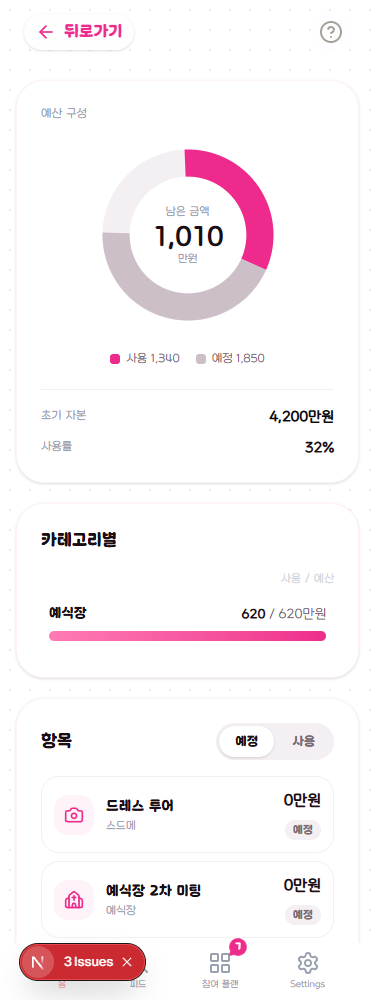

C안 · 05
예산 상세
면에는 초기 자본만 올립니다. 남은 금액은 도넛이 계속 맡습니다 — 두 번째 잔액 숫자를 만들지 않는 것이 이 화면의 규칙이고, 면에 남은 금액을 또 쓰면 예전에 없앤 문제가 그대로 돌아옵니다.

초기 자본
4,200만 원
남은 금액
1,010
만 원
카테고리별
항목
6면에 남은 금액을 쓰지 않는 이유
예전에 남은 금액(자본−예정−사용)과 사용 후 잔액(자본−사용)이 따로 놀아서 물음표 툴팁으로 해명하던 화면입니다. 지금은 둘 다 도넛의 구간이라 툴팁이 필요 없습니다. 면에 잔액을 또 쓰면 그 문제가 되돌아옵니다. 그래서 면에는 초기 자본만 둡니다.
뒤로가기
떠 있는 흰 알약이 면 안의 화살표로 들어갑니다. 지금은 알약이 도넛 카드 위에 겹쳐 있어 스크롤하면 카드와 섞입니다.
카테고리 표
지금 폰은 사용 / 예산 한 덩어리라 "얼마 남았나"를 암산해야 합니다. 웹처럼 예산 · 사용 · 남음 세 열로 세웁니다 — 폰 폭에서도 숫자 세 개는 들어갑니다.
항목 목록
카드에서 구분선 목록으로. 항목이 20개를 넘는 화면이라 카드 여백이 그대로 스크롤 길이가 됩니다.
지키는 것
도넛의 자본 초과 표현(분모 = max(자본, 사용+예정), 자본 위치에
검은 눈금, 그 너머 빨간 구간)을 그대로 둡니다.
AI 조언 버튼은 되살리지 않습니다. 가이드 앵커
#budget-stat-grid·#budget-analysis·
#budget-tab·#budget-list 도 그대로입니다.